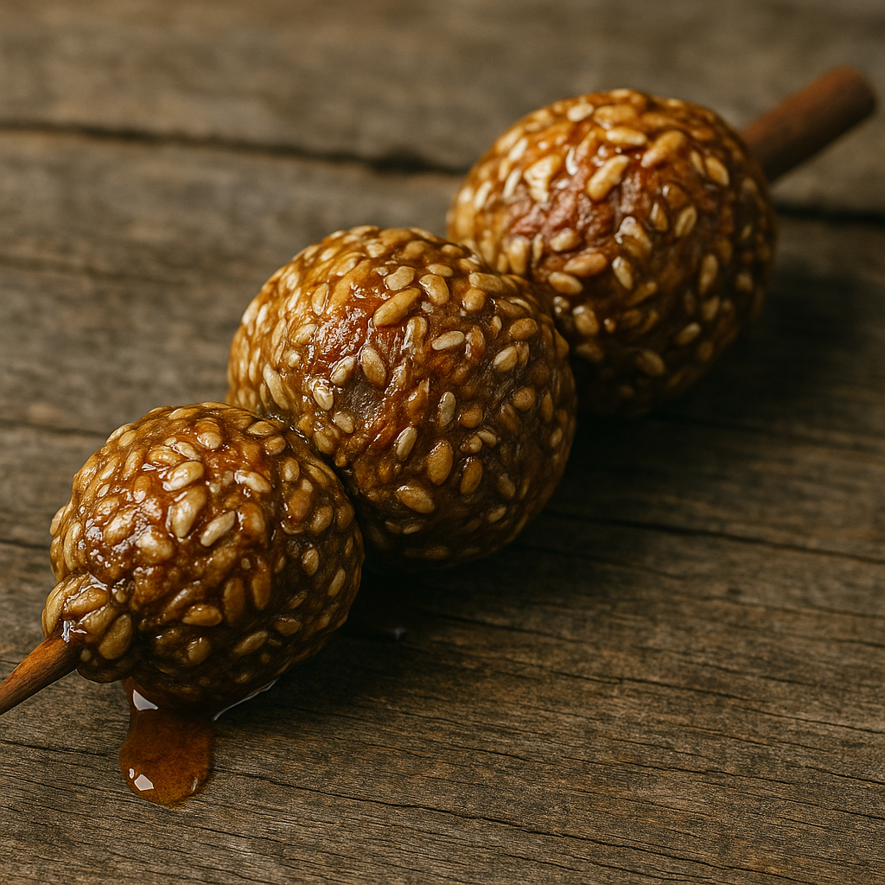

Honey Nut Treat Recipe
Description
A beloved Skyrim snack, the Honey Nut Treat features plump, golden clusters of roasted nuts coated in sticky, glistening honey, skewered on a wooden stick, perfect for a quick bite on the road or by the hearth of an inn.
Ingredients
- Pitted Dates
- Golden Raisins
- Sliced Almonds
- Rolled Oats
- Honey
- Peanut Butter
- Salt
- Cinnamon
Steps
- Add dates and raisins to a food processor.
- Pulse until the mixture is smooth and no large pieces remain.
- Add almonds and oats to the food processor.
- Pulse a few more times until they are broken down and well combined with the fruit paste.
- In a separate bowl, gently heat the honey and peanut butter until warm and slightly runny.
- Add the processed fruit-nut-oat mixture to the bowl with the honey and peanut butter.
- Sprinkle in salt and cinnamon.
- Stir vigorously until everything is well-mixed and the texture is thick and sticky.
- Scoop out small portions of the mixture.
- Press the mixture between your hands to compact it, then roll into balls.
- Once all balls are rolled, gently thread them onto skewers.